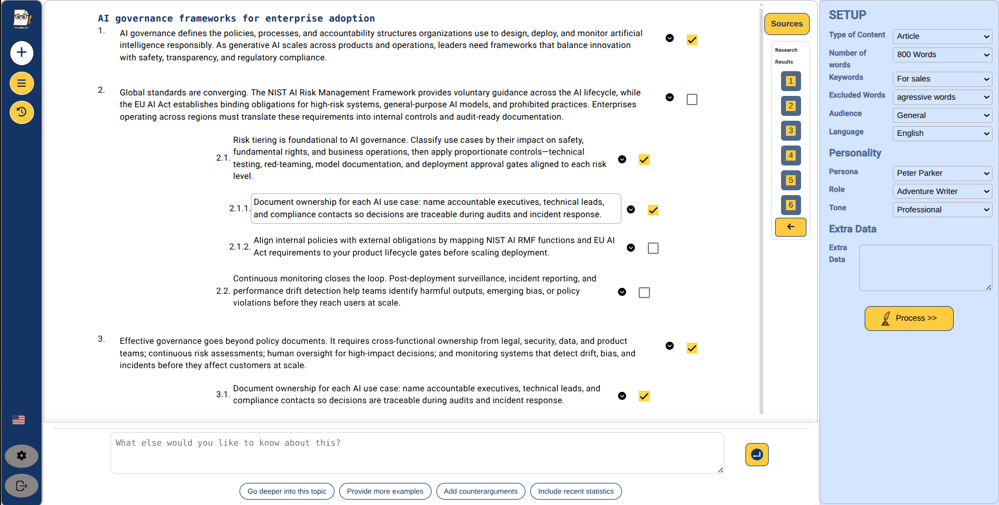
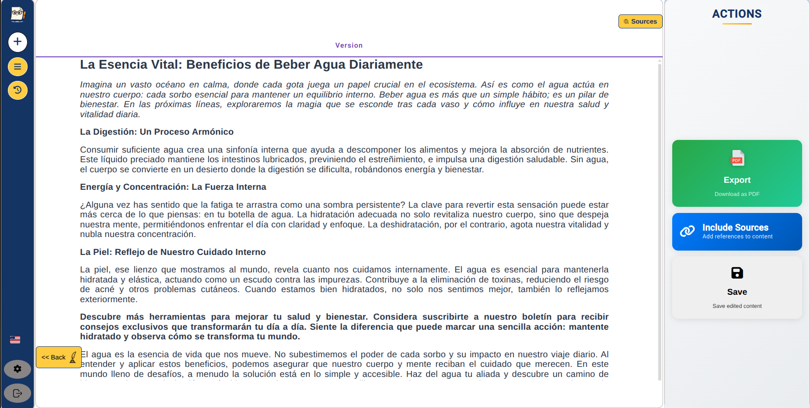
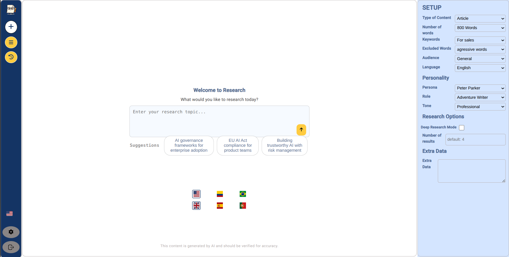
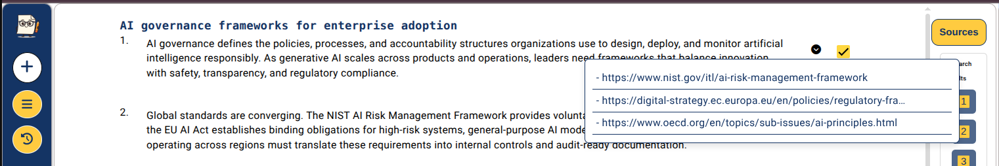
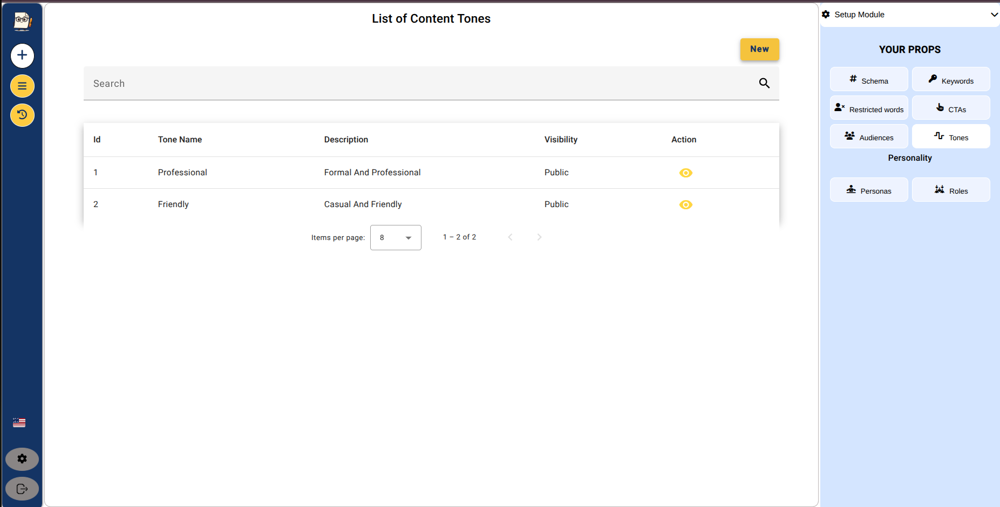

Strongest Writer — product execution evidence for an AI-native editorial platform.
A dedicated product case study showing how vague editorial needs were translated into AI workflows, source traceability, acceptance criteria, engineering handoff, and product decision records.
Product overview
Strongest Writer — AI-native B2B product from concept to production.
End-to-end AI product ownership: discovery, behavior definition, workflows, AI quality, source traceability and production delivery.
The product challenge was not simply “generate articles with AI.” The real challenge was defining a repeatable editorial workflow where research, sources, AI output, configuration and human review could operate together.
Discovery and problem framing
Captured customer needs for faster article generation and converted them into product requirements, workflows and roadmap priorities, validating where AI added value and where human judgment had to stay in control.
Backlog and acceptance criteria
Defined user stories, behavior expectations, output actions, configuration controls and validation requirements engineering could implement and QA could verify.
AI workflow design
Led the Research Tree concept so users could structure research, reuse branches, inspect sources and generate more original, better-supported articles.
Production and iteration
Managed scope, stakeholder expectations, release decisions, technical debt discussions and continuous AI feature improvement after launch.
Artifact Type · Competitive Analysis • Product Discovery • Feature Mapping
Product Discovery Evidence
Product Discovery Research
How product discovery and competitive research shaped Strongest Writer before development began.
Structured discovery across AI writing, research, publishing, SEO and editorial workflow products — summarized for a public portfolio without exposing confidential research artifacts.
Before defining the Strongest Writer MVP, I performed structured product discovery across AI writing, AI research, publishing, SEO and editorial workflow products. The goal was not to copy competitors. The objective was to understand user workflows, feature patterns, product positioning, workflow gaps and market opportunities before defining the product architecture.
- 1Market Research
- 2Competitive Mapping
- 3Feature Inventory
- 4Pattern Identification
- 5Opportunity Analysis
- 6Product Vision
- 7MVP Definition
- 8Engineering Execution
Discovery Map — product patterns observed
Generation-first tools
Examples
Jasper AI, Anyword, WriteMe AI, Jaq n Jil
Observed strengths
- Fast generation
- Marketing copy
- SEO support
Observed tradeoffs
- Weak research traceability
- Limited evidence comparison
- Generation-first workflow
Research without publishing
Examples
PaperGuide, WriterZen, LongShot AI
Observed strengths
- AI search
- Literature review
- References
- Topic exploration
Observed tradeoffs
- Research stops before publishing
- Limited editorial workflow
Publishing-first automation
Examples
MacawHQ, Article Fiesta, AutoWrite, Written Labs
Observed strengths
- WordPress integration
- CMS publishing
- Bulk generation
- SEO automation
Observed tradeoffs
- Publishing-first workflow
- Limited validation
- Limited source comparison
Isolated copilots
Examples
Copilotly, Newswriter.ai
Observed strengths
- Productivity
- Specialized copilots
Observed tradeoffs
- Fragmented workflows
- Isolated experiences
Research-first editorial platform
Competitive research showed that many products solved individual problems very well, but very few connected research, source comparison, validation, ranking, article generation and publishing into one coherent editorial workflow.
The original competitive research evaluated AI writing, research, publishing, SEO and editorial workflow platforms to identify recurring patterns and product opportunities before defining the Strongest Writer MVP.
To respect confidentiality and intellectual property, this portfolio summarizes the methodology, the observed patterns and the resulting product decisions rather than publishing the original research artifact.
Research summarized for public portfolioThis discovery process directly influenced Strongest Writer's architecture. Rather than building another AI writer, the product evolved into a research-first editorial platform focused on source comparison, validation, ranking, article generation and WordPress publishing.
Evidence + screenshots
Product evidence mapped to AI capabilities.
Each screenshot connects product decisions to the capabilities recruiters care about: AI workflow design, source traceability, behavior specification, delivery discipline and enterprise product communication.

Research Tree — AI workflow orchestration
Evidence of product thinking beyond content generation: structured research, reusable branches, selected sources and a repeatable workflow for higher-quality AI outputs.

Generated Article — output quality and user actions
Shows the production flow where AI output, source inclusion, export, save actions and human review become part of the product experience.

Home Research Entry
Prompt entry, setup controls, language selection and initial user flow for AI-assisted research.

Source Validation
Evidence of traceability: sources are visible inside the research flow before users rely on AI output.

Setup Module
Behavior controls for tone, prompts and configuration. This is where AI product quality becomes product specification.
Product Execution Evidence
Research Tree — from vague research need to reproducible product capability.
The strongest product artifact in Strongest Writer: product thinking over implementation, turning “help me research” into a traceable, reproducible capability.
The Research Tree turned a vague request — “help me research” — into a reproducible product capability: branch, compare, validate, synthesize and generate with traceable sources.
The objective was not simply to generate content faster. It was to help users produce higher-quality, better-supported articles by combining AI-assisted discovery with human judgment, while reducing cognitive overload and preserving full traceability of the research process.
Product solutionThe Research Tree transformed research from a linear conversation into an iterative knowledge-building process. Users could expand different branches, compare perspectives, validate evidence across multiple sources, and decide which information should be included in the final article.
One answer is not enough
Journalists and researchers could not rely on a single AI-generated answer. One response or one source increased the risk of bias, missing perspectives, incomplete context, and weak traceability — making the output hard to defend editorially.
From answer to process
The product moved from “AI writes an article” toward “AI supports a traceable research process,” where exploration, comparison and human selection are first-class steps rather than hidden ones.
Artifact type: Product Decision Record + Acceptance Criteria + Engineering Handoff
Journalist
As a journalist, I want to explore multiple research branches so I can avoid depending on a single AI-generated answer.
Researcher
As a researcher, I want to compare sources and perspectives so I can identify bias, gaps and contradictions before writing.
Editor
As an editor, I want selected sources to remain traceable so the final article can be reviewed and supported with evidence.
What “done” means
- User can create or expand research branches from an initial topic.
- Each branch preserves the query, sources, and generated findings.
- User can compare multiple branches before generating the final article.
- User can select which research inputs should be included in the final output.
- Sources remain visible before and after article generation.
- The workflow reduces dependency on a single AI answer.
- Empty, duplicated, low-quality, or failed source results are handled clearly.
- The feature supports human review before publication.
Cross-discipline coordination
Delivering one user-facing capability required aligning several systems into a single coherent flow:
- AI prompting and response generation
- Web scraping and source extraction
- Ranking and relevance scoring
- Frontend tree interaction
- Article generation flow
- Source traceability and persistence
Build a Research Tree instead of a single research prompt
Context: Users needed richer research exploration, not just faster generation.
Alternatives considered:
- Single prompt article generation
- Chat-style research assistant
- Flat list of sources
Decision rationale: A tree structure better represented how research actually evolves: question, branch, compare, validate, synthesize.
Outcome: The product moved from “AI writes an article” toward “AI supports a traceable research process.”
Questions used to pressure-test the feature
- Did users retain control over what information entered the final article?
- Could users inspect source origin before trusting the output?
- Did the workflow reduce cognitive overload?
- Did the feature improve perceived article quality and confidence?
- Were edge cases visible enough for engineering and QA?
Evidence of senior product judgment
The artifact shows discovery grounded in real user behavior, an information architecture instead of a single workflow, explicit decision records, and acceptance criteria that engineering and QA could act on — research treated as a product, not a prompt.
Roadmap
Next Strongest Writer artifacts to document.
The same product-execution structure will be reused to document the remaining surfaces of the platform.
Source Validation
How the product made sources visible before users relied on AI-generated output, reducing blind trust and improving traceability.
Ranking Agent
How the product evaluated and prioritized research inputs so users could work with more relevant sources and reduce noise.
Setup Module
How configuration controls translated editorial expectations into product behavior: tone, prompt strategy, language, and output constraints.
These artifacts will reuse the same structure: problem, user stories, acceptance criteria, engineering handoff, decision record and validation notes.
Delivery Discipline
Strategic tasks mapped to what the company is asking for.
These are written intentionally around enterprise B2B product ownership, AI/agent behavior, acceptance criteria, Evals collaboration and scope discipline.
Owned product backlog and roadmap discipline
- Converted customer and executive requests into prioritized product work.
- Separated core product needs from scope creep to protect delivery focus.
- Aligned engineering capacity with business value and customer expectations.
Defined what “done” meant for AI behavior
- Specified expected AI output behavior, source handling, tone controls and article generation flows.
- Created criteria for output usefulness, traceability and user review before release.
- Translated ambiguous AI expectations into implementable engineering tasks.
Designed AI-assisted workflow behavior
- Defined how users move from research query to research tree, source review and article generation.
- Balanced automation with user control through setup modules, prompts, tone and export actions.
- Evaluated model behavior and adjusted product decisions based on practical output quality.
Managed stakeholders and delivery risk
- Communicated delivery trade-offs and delays transparently to business stakeholders.
- Coordinated with technical leads and developers to recover from quality issues.
- Promoted more responsible AI use after identifying risks from uncontrolled AI-generated code.
Contact
Let’s talk about AI product, evaluation and governance.
I am especially interested in AI-native B2B products where product quality depends on behavior definition, evaluation, human oversight, stakeholder management and disciplined delivery.